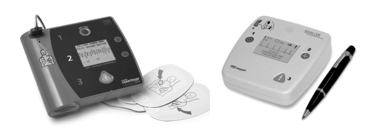
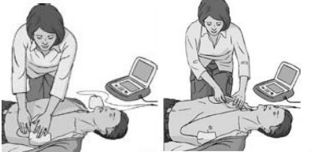
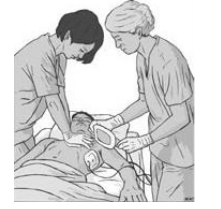
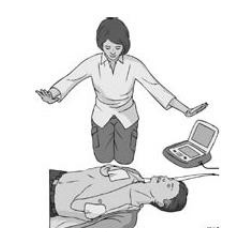
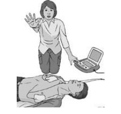

Базовые реанимационные мероприятия с автоматической наружной дефибрилляцией
Поскольку мировая статистика летальных исходов среди причин их возникновения выделяет болезни сердца, эффективная помощь таким пострадавшим без применения дефибрилляторов невозможна. В связи с чем, их конструкция была доведена до состояния, когда анализ параметров работы сердца и выбор режимов электролечения пострадавшего производятся автоматически, что позволило рекомендовать автоматические внешние дефибрилляторы к использованию людьми, не имеющими медицинского образования, включить их применение в комплекс базовых реанимационных мероприятий, разработать и внедрить национальные программы широкого доступа к автоматическим внешним дефибрилляторам.
Преимущества АНД:
-Автоматический анализ ритма сердца начинается тотчас после
приклеивания электродов к груди пострадавшего
-Распознаваемость фибрилляции желудочков достигает 100%
- реплики АНД позволяют любому инструктированному
персоналу уверенно проводить дефибрилляцию при внезапной
смерти пострадавшего
-Автоматическое определение показаний к дефибрилляции не
требует знания ЭКГ
-Автоматическая запись протокола реанимации и контроль времени
позволяют анализировать каждый случай внезапной смерти с
применением АНД
-Набор заряда рассчитывается автоматически по импедансу грудной
клетки, что позволяет проводить дефибрилляцию, не задумываясь о
выборе заряда
-Аккумулятор АНД в режиме ожидания сохраняет запас энергии в
течение пяти лет
-Однократной зарядки аккумулятора хватает для нанесения 360
разрядов.
Спасатели, даже не имеющие медицинского образования, могут быть обучены обращению с автоматическим дефибриллятором (АВД). В этом случае порядок действий выглядит следующим образом:
1. Убедитесь, что вы, пострадавший и окружающие находятся в безопасности.
2. Если пострадавший не реагирует на внешние воздействия и у него нарушено дыхание, то попросите кого-нибудь принести АВД и вызвать скорую помощь.
3. Начните проведение СЛР в соответствии с рекомендациями по БРМ.

Рисунок. 20 Виды автоматических внешних (наружных) дефибрилляторов
Последовательность действий при работе с АВД
1. Начать БРМ по описанному выше алгоритму. Если спасатель один, и в распоряжении уже имеется АНД – начать БРМ с использования АНД.
2. Как только на место происшествия доставлен АНД:
• включить АНД и наложить электроды на грудную клетку пострадавшего

При наличии второго спасателя во время наложения электродов следует продолжать непрерывные компрессии грудной клетки;

• далее следовать голосовым и визуальным командам АНД;
• убедиться, что во время анализа ритма никто не прикасается к пострадавшему – это может нарушить алгоритм анализа ритма;

• автоматический наружный дефибриллятор проводит автоматизированный анализ ритма пострадавшего по специально разработанному компьютерному алгоритму: ФЖ и ЖТ без пульса распознаются как ритмы, требующие дефибрилляции.• если дефибрилляция показана (ФЖ или ЖТ без пульса), убедиться, что никто не прикасается к пострадавшему, и нажать на кнопку (в случае автоматического режима работы АНД нажимать на кнопку не нужно); после нанесения разряда продолжить БРМ в соотношении 30:2 без промедления, также следовать голосовым и визуальным командам АНД;

• если дефибрилляция не показана,, продолжить БРМ в соотношении 30:2 без промедления, следовать голосовым и визуальным командам АНД.
Использование АНД у детей. Стандартные АНД можно использовать у детей старше 8 лет. У детей от 1 до 8 лет необходимо применять детские электроды и сниженную мощность разряда (или педиатрические установки аппарата), но при отсутствии перечисленного, возможно использование стандартных настроек. У детей младше 1 года следует использовать АНД со специальными настройками.